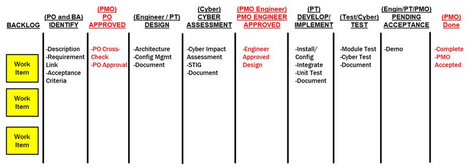
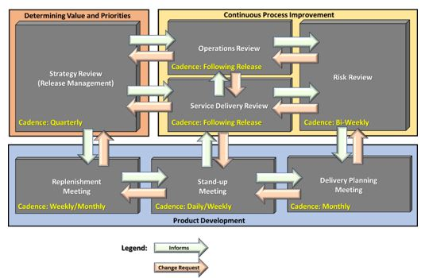

5 Agile Framework
5.1 Part I - Establish the Product Backlog (PB) and Constraints:
5.1.1 Establish the Product Backlog
For a government project the initial list of requirements is established within the contract and will be used as the foundation for the initial PB development (and captured within the appropriate Backlog Management tool). The establishment of the PB is comparable to the establishment of a language - in this case it is the language of "value" that provides for understanding between the government and the development team. For this "value" language - the individual PB components provide the words and grammar (think of Epics as Paragraphs, Features as sentences and User Stories/Cards as words), while the order of the backlog based on prioritization of "value" provides the context of the product story.
This initial section focuses on the creation of the Product Backlog. Later sections will discuss how the PB is prioritized to provide the most value up front as well as how it evolves based on a changing environment to continue to remain value relevant. As the PB will generally follow a rolling-wave planning process with more detail provided as it becomes available or necessary, it can initially be setup with larger organizational elements (epics and features) which will be iteratively refined later. A recommended nested organization for these components include:

- Epics - These include functionality which can take one or more releases to complete. For government contracts, these can be linked to a Contract Line Item Number for easier reference to cost tracking and earned value metrics.
- Features - These include functionality components that will generally take more than one iteration to complete and provide the functionality to the users through releases.
- Product Backlog Items (PBI) - These include the product increments which consolidate to provide the functionality of the feature and generally can be accomplished within a single iteration. PBIs can be decomposed into specific tasks with hours estimated for completion.
The main component of the PB is the PBI that may be named something different depending on the framework (for Scrum and XP can be a user story, for Kanban can be a simple work item or card). In translating a requirement to a PBI, it is necessary to understand that the PBI can contain 1 or more requirements as it is based on the customer functional need (can be captured in government use case documents). However, while functional requirements will most likely include BES Process Directory requirements terms including "shall" which dictates the provision of a functional capability, they may also include conditional requirements indicated by the "must", "must not" and "required" requirements descriptions indicating additional performance requirements or constraints). Additional non-functional requirements to be considered include:
- Preparation and conduct of design reviews
- Hardware setup (Different environments)
- Tool setup (Software tools)
- Network Setup (establishing connectivity - access requirements, ports and protocols)
- UAT, Pre-Prod, Prod transitions (can be facilitated by continuous integration and Devops)
- Documentation (User Guides / CDRL's / Training Materials
- Regression testing (can be facilitated by automated testing)
- Cybersecurity testing
The typical PBI contains a minimum of 3 elements -
- Title: Ensure this ties to the logic of the work (many times the titles of a PBI can cause confusion between the PO and development team if improperly stated).
- Description: Explains the customers need and the functionality required.
- Acceptance Criteria: Explains the conditions under which the PO will accept the work item as complete (note that there are additional criteria which will be discussed in presenting a "Definition of Done"). These criteria should be testable (I.e. should be specific enough to be able to qualify as complete or not complete).
A typical PBI descriptions contains the following elements:
- "As a..." - Defines the perspective of the user who needs the functionality.
- "I need..." - Defines the functionality needed.
- "So that..." - Defines the why of the functionality (enables the developers' ingenuity as they may have a better solution which still meets the "why" of the user's request though the how may be something different).
Example: As a maintenance scheduler I need to be able to review the Daily Schedule So that I can review the events scheduled for the day and the status of their completion
Additional information can be included within the description. One recommendation is to include the requirement number(s) from the original contract in this section to facilitate the creation of the Requirement's Traceability Matrix necessary for design reviews and deliveries.
While the PO is the primary owner of the backlog, the initial creation of the backlog is most effective when completed
in a collaborative manner. While the term Sprint 0 is not an official Scrum term, it does provide a context for doing
the preparation work necessary to initiate an agile methodology (without the PBI's it is not possible to do the work).
Whatever it is called, there is a preparation session which is necessary to prime the pump of the agile framework by
building the initial PB. Here is a recommended approach to doing this which ends with the government System Functional
Review (SFR) which established the PB as the Functional Baseline:
Preparation Phases
(Phases are provided here as timeline will have to adjust based on size and complexity of requirements as well as whether preliminary planning has been done...i.e. feature driven planning):
Phase 1: (Government and Development Team collaboration preparation)
- Government provides initial Requirements Traceability Matrix (RTM).
- Government provides initial feature backlog linked to RTM to development team (with minimum of description filled out and rough draft of acceptance criteria).
- Development team reviews feature descriptions and provides feature backlog feedback to government at end of the phase with recommended revised acceptance criteria and questions of clarification for review prior to physical collaboration.
Phase 2 (Physical Collaboration - government and development team)
- Collaboratively refine features with end-state of initial Title, Description, and Acceptance Criteria agreed on by government and development team
- Conduct breakout sessions as necessary to provide additional details to development team necessary to make initial estimates of feature sizes
- Development team makes initial estimates of feature sizes (T-Shirt sizing).
- Development team prepares for SFR.
5.1.2 System Functional Review (SFR)
The SFR is a multi-disciplined system-level technical review ensures that the functional baseline is established and has a reasonable expectation of satisfying the requirements of draft capability development document (CDD) within the current budget and schedule. It completes the process of defining the system-level technical requirements that are documented in the system performance specification. According to the BPD, a successful completion of SFR provides a sound technical basis for proceeding into preliminary design. If the above collaboration is done correctly, this review becomes a "value language" confirmation brief ensuring that the PB correctly reflects the requirements of the contract and are consistent with cost (program budget), risk and other system constraints.
- Audience: Functional Review Board (FRB) members
-
Objectives:
- Reconfirm that Capability Package Requirements are linked to PB Features derived during the preparation event above (Sprint 0)
- Initial identification of system-level document changes which will need to be addressed during design reviews (see CDRL section (link within main document))
- Establish Functional Baseline.
- Add Feature list to the Program Product Backlog to be considered in Release Planning for development based on PMO priorities and value determination.
- Determine based on Release Planning when each Feature should be considered within either the Preliminary Design Review or the Critical Design Review.
-
Outputs:
- Required inputs for a Configuration Control Board (CCB).
- Approved PB and Functional Baseline based on Configuration Control Directive (CCD) from CCB.
- Updated system release roadmap with new features.
- Updated Requirement Traceability Matrix with links from requirements to PB.
- Identified system-level CDRLs to update for design reviews based on PB contents.
- Identified features for design reviews (Preliminary Design Review [PDR] and Critical Design Review [CDR])

5.1.3 Release Management
Release management is about determining what is expected to be in each release and what comes next for the development team as well as identifying PBI dependencies early enough so that they can be rectified prior to becoming impediments during development. The PB includes those features approved in the functional baseline by the PMO during the System Functional Release (SFR) conducted at the end of Sprint 0. The features are prioritized within the PB by the PMO and considered by a Release Planning committee for inclusion in upcoming releases. Those features which are selected for inclusion in upcoming releases are updated on the Release Roadmap based on their tentative estimate of completion. The Release Roadmap is a high-level view of the PB features, with a loose time frame for when the team will refine and develop those features.
Proposed agenda for Release Planning meeting:
- Objective Overview
- Review Current Release Roadmap (Starting point)
- Review Current Status of Development Streams (Establish current status which may have changed since last release planning session)
-
Determine dates for:
- Next Release (Feature focus for the CDR)
- Next Release (+1) (Feature focus for the PDR)
-
Review Product Backlog Feature Priority Lists (Confirm priorities)
- Confirm Features for Next Release
- Identify Features for Next Release (+1)
- Update Release Roadmap (Use information from session to update the release roadmap)
- Discuss any release process improvement steps (Continuous Improvement)

5.1.4 System Engineering Design Reviews
Link to DAU System Engineering Overview (Add to links appendix - will not be contained in base document): https://www.dau.mil/guidebooks/Shared%20Documents%20HTML/Chapter%203%20Systems%20Engineering.aspx#toc83
A secondary advantage of implementing a pro-active release management system is the ability to establish what features will be reviewed at what level for Agile-based design review gates (here we are talking about Preliminary and Critical Design Reviews but not in the level of detail that was expected within traditional development engineering management plans as Agile is about doing architectural design "just in time" and iteratively "just enough"). The Design Reviews can be synchronized with the above release management process to fulfill their primary objectives based on two different perspectives:
-
Preliminary Design Review (PDR):
- Focus: The features included in the release after the upcoming release (long-term perspective).
- Objectives:
- Provide sufficient confidence in the preliminary design's integration with necessary system components to serve as the starting point for Agile incremental design during development.
- Provide technical confidence that the capability need can be satisfied within cost goals based on the schedule included in the release roadmap.
- Confirms that high-level design decisions are consistent with the user's performance, schedule needs, and the validated Capability Development Document (CDD).
- Establishes the allocated baseline (based on features), which is placed under formal configuration control.
- Agile Revisions:
- Identify dependencies on external requirements or other features to ensure proper sequencing and identify issues for resolution prior to them becoming impediments (identifies feature risks early).
- Determine required infrastructure requirements so they can be acquired prior to development.
- Agenda Template:
- Review Release Roadmap
- Review Features for the release after the immediate upcoming release.
- Review Feature description
- Review Feature acceptance criteria
- Review Features system-level design integration (focused on necessary design integration of feature capability)
- Review Feature dependencies (I.e. external interface requirements, additional software requirements) - these will become an initial set of assumptions for risk management (the goal is to mitigate the risks so that the assumption will not impede our development efforts later)
- Review Feature CDRL requirements (what CDRLs will need to be updated based on the completion of the feature development)
- Review Feature size estimates (establishes metric for estimating duration)
- Revise Release Roadmap as necessary based on updated information
-
Critical Design Review (CDR):
- Focus: The features included in the next (upcoming) release (short-term perspective).
- Objectives:
- Establishes the initial product baseline (based on features), which is placed under formal configuration control.
- Confirms the high-level system design is expected to meet system performance requirements
- Confirms the system is on track to achieve affordability and should-cost goals as evidenced by the design documentation
- Establishes requirements and system interfaces for enabling system elements such as support equipment, training system, maintenance and data systems.
- Agile Revisions:
- Confirms that dependencies identified in the PDR have a resolution strategy that will be completed in time to enable development of the dependent features (will not become impediments during development).
- Confirms that features are ready for further refinement into work items for the development team.
- Agenda Template:
- Review Release Roadmap
- Review Features for the upcoming release.
- Review Feature description
- Review Feature acceptance criteria
- Review Features system-level design integration and system requirements:
- UI change requirements (mock-ups if available)
- Middle tier requirements (services)
- Data structure requirements
- Review Feature dependencies to ensure they have been resolved or a feasible resolution strategy is in place prior to beginning work on the feature (these address the initial assumptions determined during the PDR)
- Review Feature CDRL requirements - update as required
- Review Feature size estimates (establishes metric for estimating duration) - update based on additional information
- Revise Release Roadmap as necessary based on updated information

5.1.5 Refine the Product Backlog (Features -> Initial PBIs)
In general, the refinement process establishes the "development language" between the Development Team and the Government through their designated PO. Feature refinement should be conducted about 2 months prior to working on the first PBI of the feature. The objectives of feature refinement are to:
- Break down feature to individual PBIs (user stories, cards, work items, etc) with, at a minimum, a description and acceptance criteria;
- Provide an initial estimate of the complexity of the work item (sizing estimates can be associated with established costs and used for EV metrics);
- Gain the formal approval of the PO to include the refined work items into the Product Backlog.
Feature refinement in preparation for development work conducted between the government PO and Development Team:
- Normally takes 1-2 hours per feature if done correctly (the more discussion, the better clarity of understanding between the government and the development team increasing the likelihood that the development product will meet government expectations).
- Refine initial title, description, acceptance criteria at the feature - level based on knowledge acquired since design review - this is the focus of the PMO input - provides the WHAT of the feature.
- Identify the logic of the work.
- Identify the initial user stories.
- Ensure that the stories have a description and acceptance criteria which provide a common reference for the team to produce an initial sizing estimate (provides metric for EV - can be updated later).
- Identify infrastructure requirements (i.e. suites) necessary for development.
Three questions to guide Feature Refinement Discussion and what they are attempting to elicit:
- What do you want to see at the end? (Acceptance Criteria)
- What are the high-level steps to get there? (Logic)
- What are the sub-steps for each of the high-level steps? (PBIs)

5.1.6 Prioritize the Product Backlog
Agile is about providing value to the government customer as quickly as possible. Less valuable work is ranked lower in the priority scale. Thus, after refinement of the features into PBIs within the PB, it is necessary to rank them based on the value they provide. There are multiple considerations in evaluating the value of each individual PBI including:
- What provides most value functionally to the government user?
- What impact does the PBI have on other items within the backlog (i.e. are their dependencies between work items)?
- Cost / impact assessment of each PBI.
- Learning - Are their efficiencies to be gained for the remaining work items by completing a specific story earlier (i.e. taking a smaller item which is easier to do to establish the templates and processes for doing more complex work items of a similar nature later but at a more rapid pace)?
- Are their negative impacts to other PBIs by not completing one earlier?
- Regulatory deadlines (not considered agile, but is a consideration for prioritization)
It is the responsibility of the PO, as the representative of the government to continuously reprioritize the PB to provide the most value to the government based on the current environment (especially as new PBIs are added or removed from the PB).

Prioritization considerations to avoid (as they are normally short-term perspectives which may reduce long-term value):
- Highest Ranking Person in the Room
- Flavor of the Day
5.1.7 Constraints Analysis
The above sections focus on refining requirements into work items, but there are several; other areas of regulatory constraints within the governmental regulatory environment that should be addressed prior to determining as well as implementing an Agile development methodology. The following is a non-exhaustive list of items that may impact the execution of development based on scope (these provide a basis for discussion between the Government and Development Team to determine which will be enforced and to what level):
- External testing requirements such as DT&E and QT&E (capacity may be required to prepare and support testing - need to delineate what falls to the development team and what will be done by the government)
- Additional BPD Design, Test, Functional Readiness Reviews (all come with a preparation and documentation overhead - will need to discuss expectations and agile modifications based on iterative versus up front design)
- Development environment limitations (discussion around whether the contractor will control the environment or whether it is an externally administered environment - I.e. the Capabilities Integration Environment (CIE))
- Access requirements (security requirements may dictate which personnel resources can be allocated to a team)
- Re-usability and compatibility requirements (establishes the boundaries of initiative for the developers - "can be innovative within these limits")
- Cybersecurity requirements (the pre-requisite cybersecurity requirements may limit development options)
5.1.8 Change Management
While there is an inherent flexibility within Agile methodologies to accept change specifically through backlog grooming and PBI refinement, there is still the challenge of differentiating between contractual scope additions versus simple requirement refinement. The differentiation of what will be left within the authority of the PO to approve through backlog refinement and what requirement changes need formal approval in the form of a Configuration Change Directive (CCD) should be established prior to the beginning of development to ensure proper steps are taken within the established constraints to adapt to change. When a formal configuration change is necessary, the government Configuration Control Board (CCB) with input from the Functional Review Board (FRB) should:
- Review the list of any new user requests, deficiency reports and change requests received in the project space;
- Assess the impact of a change;
- Assign a priority to the change;
- Assign a business value to the change; and
- Implement a CCD to insert an approved work item for the change into the Product Backlog (upon completion of any contractual modification requirements to accept in the new work)
5.2 Part II - Establish the Methodology:
5.2.1 Definition of "Ready" and "done"
Prior to implementing a specific development methodology, the definitions for the development entry and exit criteria need to be defined. Thus, prior to beginning development through any of the methodologies, two definitions should be agreed upon between the PO and development team in reference to individual PBIs:
Deifinition of Ready
-
Purpose
- Describes materials and topics that must be included and addressed in well written backlog items (I.e. Scrum / XP User Stories, Kanban cards)
- Used to evaluate whether or not a PBI has been appropriately elaborated and is ready for development
- Helps ensure that backlog items are complete and understandable before being scheduled for an iteration.
-
EXAMPLE DEFINITION OF READY CHECKLIST
- Description clearly states the who ("As a"), what ("I want to"), and why ("so that") are for the backlog item
- PO has approved the backlog item
- Acceptance criteria is clearly defined
- Scenarios and expected outcomes are clearly defined
- Artifacts defining user interface requirements are included (if applicable)
- Business rules are referenced or included (if applicable)
- Dependencies are identified
- Development Team has reviewed and confirmed they understand the backlog item
- Backlog item is appropriately estimated (I.e. sized for scrum)
- "Definition of Done" for the PBI is understood
Definition of Done
-
Purpose
- The "Definition of Done" describes criterion that must be met by each committed User Story or Defect to development before the PO can validate that the PBI is accepted.
- Definition is used to help ensure that the developed product is consistent with the associated backlog item, is high quality, and is ready for production testing.
- "Done" establishes quality norms and assures the PO that major defects are not likely to be identified during production testing
-
EXAMPLE DEFINITION OF DONE CHECKLIST
- Unit testing and module testing are complete
- All acceptance criteria defined within the PBI are met
- Test results have been reviewed with the PO
- The PO concurs with the adequacy of the testing
- The backlog item has passed acceptance testing by the PO
- The development product has been demonstrated and accepted by the PO
5.2.2 Scrum
This section provides a template for the scrum process. As it is a template, government and development teams are encouraged to adapt the process based on team structure, culture and regulatory constraints to make it more efficient. To that effect, this section is prescriptive versus directive in nature. Also note that we have transitioned from the general agile term of PBI to user stories as they relate to Scrum.
Scrum Methodology:

Scrum Events
The five key Scrum events are:
- Product Backlog Refinement - Based on the project release roadmap and PO priorities, there are two components to refinement:
- Feature Refinement - Breaking down features and setting priorities (this process was explained in Section 5.1.5 above under feature refinement)
- User Story Refinement - Grooming user stories so that they are ready to be accepted into a sprint
- Sprint Planning: Determining the goals and related stories for a sprint
- Sprint Execution - Developing and testing stories so they are done
- Sprint Review - Providing feedback to improve the product
- Sprint Retrospective - Determining how to improve the process
Product Backlog Refinement
-
Feature Refinement Session (2 Sprints early): Coordinated by the Scrum Master with the Solution Architect and Customer System Engineer (and POs if available) to:
- Ensure that the feature acceptance criteria are still correct for upcoming features originally determined during Sprint 0 activities.
- Ensure that all dependencies (possible future impediments) have a resolution strategy prior to development.
- Ensure that design tenets are understood within the context of the feature work.
-
User Story Refinement Collaboration (Between Feature and User Story Refinement Sessions): Team designated Business Analyst works collaboratively with the PO to refine story priority and the acceptance criteria necessary to accomplish the associated feature functionality. Team testers can also add necessary positive test cases based on draft acceptance criteria to the story (facilitates test driven development).
-
Refinement Session - User Stories (1 Sprint early): Business Analyst discusses each story with the development team to ensure understanding of delivery requirements. The PO is included in this refinement session, but it is the development team that is being introduced to the stories. The PO is there to confirm through listening to the team's conversations with the Business Analyst that his/her intent is understood within the context of the story. This refinement session is done to ensure that each story meets the established Definition of Ready prior to being accepted into the sprint for development.
Meeting the Definition of Ready: The acronym INVEST provides a high-level cross-check of whether a story is Ready for development. It is normally part of the last check done on a story during either Refinement Day activities or as part of Sprint Planning for priority stories that have been updated since Refinement Day.
While it is presented here under the Scrum section, it can be used with modification (I.e. Kanban work flow estimates versus sprint estimates) within the other agile frameworks as a final check for each PBI). The acronym represents the following criteria:
- (I) Independent - Story contains no dependencies on unavailable external resources or preparatory user story completion
- (N) Negotiable - Three perspectives must be represented in refinement of the user story to meet the PO's intent - Business Analyst, Developer, Tester - if they have not been involved in refinement, a key perspective on the complexity of the story is missing from the preparatory analysis.
- (V) Valuable - Established by the prioritization given by the POs.
- (E) Estimable - Estimates provide a gage for the acceptance of future work levels into a sprint as well as for forecasting future work timelines - they gain value over time as the team evolves.
- (S) Small - User stories should be small enough to complete within a sprint while large enough to provide observable value to the PO.
- (T) Testable - Positive manual test cases will be added to appropriate user stories prior to being taken into the sprint to account for successful achievement of acceptance criteria. As necessary, these tests will be augmented during the sprint with additional negative manual and automated tests.
Based on the high-level of interaction between the team and the PO in this option, each story should have as a minimum 3 touch points with the PO to confirm that PO's intent is maintained throughout refinement. At a minimum, these touch points are the verification of the acceptance criteria in the documentation, the answering of team questions during team refinement of stories, and the final acceptance of the story as ready for development At this point the story is considered "ready" for acceptance into a sprint during sprint planning.
Sprint Planning
Sprint Planning (Appendix A)
Planning centers around the presence of the PO within the Planning meeting. During this meeting, the PO will review the current list of Ready user stories to ensure that they are still valuable (relevant), as well as reprioritize the Backlog based on existing value as necessary (this facilitates the team's acceptance of work into the sprint as they simply take user stories from the top of the list within their established sprint capacity.
Sprint Execution
Sprint Execution (Appendix A)
While developers and testers work to complete and validate the work required for each user story, Business Analysts and, if necessary, POs are available for clarification of requirements to ensure that the work produced meets the intent of the customer. If refinement has been done correctly, sprint execution consists of developers completing their work, testers executing the tests developed prior to the sprint (with the addition of any necessary negative test cases), and BAs and testers reviewing the completed work with the PO in order to receive early feedback or formal closure of the story as meeting the teams "Definition of Done". The user story acceptance criteria is the foundation for this definition. The story points assigned to sprint user stories not designated as "Done" are not counted when measuring sprint completion velocity.
Sprint Review
Sprint Review (Appendix A)
Story acceptance as Done is completed by the PO only (the same person who approves the acceptance criteria must be the person who approves work against the approved acceptance criteria). If the PO believes that the work does not satisfy the customer requirements, they have to make a decision: if the work does not meet the acceptance criteria, they can reject the work as not done and provide additional clarification; if the work meets the acceptance criteria, but the PO wants additional revisions, additional user stories are created and prioritized within the existing backlog. The key to the review is that it is interactive between the PO and Development Team - the focus being to improve the product.
Sprint Retrospective
Sprint Retrospective (Appendix A)
This is where the POs and the Development Team focus on improving the Agile process. Critical to understanding the concept of the retrospective is that learning always occurs during these events (Successful sprints can indicate items to sustain; failed sprints provide opportunities to learn where the team can improve). One note to remember in the retrospective is that the process should facilitate the development efforts - not impede them (hence why this document is presented as a template - it needs to be adjusted to fit the needs of the agile environment in which it exists which is a combination of the people, processes, tools, relationships and levels of trust involved in the project).
5.3 Kanban
Considerations for establishing a Kanban process:
- Establish the Kanban Board - Visualize the workflow to organize, optimize, and track the work item development progress (allows for transparency of status)
- Limit Work in Progress (WIP) - Kanban is about flow. The more items in progress, the more risk of nothing getting done. It is better to have a limited WIP that emphasizes the Lean pull system. That is, when a resource has completed work on a work item and moved it to the next column, s/he pulls the next work item from the column before it. A starting rule for each policy column is limit WIP to amount of column resources + 1 (i.e. for a development column - the WIP would be the number of developers on the team plus one - that allows for a developer who hits an impediment to stop work on that work item and pull another one from those completed in the previous column while the Agile Lead works to remove the impediment. This allows for the flow to continue).
Key points in Kanban:
- Minimize Lead Time (the time a work item is in any specific stage / column)
- Minimize Cycle Time (the time for the entire work flow cycle to complete for a single work item) - since establishing a cycle time allows for estimation of work items, but not all work items are the same complexity - one methodology for differentiating the work item complexity is to provide multiple swim lanes for tracking work progress -
- One for work items which have an expected cycle time of 1 week
- One for 2-week items
- One for 1-month items
- Optional - an expedited swim lane (similar to the express lane at a supermarket) for high-priority work items that should take precedence over all others (this will be mentioned again as a strategy for using Kanban to manage Operations and Maintenance work items)
- Manage flow - The Agile Lead works with the development team to ensure that workflow issues are identified and resolved (i.e. if there is a backup in the workflow, an additional resource may be needed to relieve pressure on the bottleneck column)
- Make process policies explicit - Each column on the Kanban Board should have an explicit policy which indicates when the work in that column is complete (policy = that column's "Definition of Done")
- Improve the process - In collaboration between the development team and PMO - there should be a focus on continuous improvement of the process (re-define the policies, determine whether columns should be added, determine whether columns should be deleted)
While Scrum focuses on a cross-functional team, Kanban focuses more on aligning the resources with the policies. A simple representation of a Kanban Board (this also provides a quick start-up template for HIA products) is:

Templated steps / policies for an initial Development Team Kanban board:
- Backlog: PMO PO prioritizes the Work Items in the Backlog
- Identify: Development Team Business Analyst in coordination with the PMO PO will identify / refine the description and acceptance criteria for the work
item
- PO Approved: PMO PO will approve the description and acceptance criteria (Confirms that the work meets functional requirements - think mini-PDR)
- Design: Development Team's Senior Developer will complete draft solution design
- Cyber Assessment: Developer's cybersecurity representative (ICW PMO Cybersecurity) will complete security assessment of solution
- PMO Engineer Approved: PMO Engineer will approve design of solution (Confirm that solution meets technical requirements - think mini-CDR) - work item now
"ready" for development.
- Develop / Implement: Developers implement the solution
- Test: Development team testers and cybersecurity will conduct testing and update documentation as needed
- Pending Acceptance: Development team will demonstrate completed work item functionality to PMO
- Done: PMO will accept work item as complete (meets the Definition of Done)
An Operations and Maintenance team provides an example of a project built for Kanban. The backlog would contain the ticket items requiring resolution with the priority of work established by a government Product Owner. This approach allows refinement of last minute prioritized work items identified by system users through the workflow's column policies identified above (the process of making the work item "ready" is captured within the workflow). Also, if the Kanban board swim lanes are setup as described above, the board will contain an expedite lane for flowing through critical fixes requiring short duration resolution. (Note: Another example would be the cybersecurity team handling the implementation of required TCNO/IAVAs.)
5.3.1 Kanban Cadences

While Scrum Events focus on execution of the time-boxed process, the key Kanban events (cadences - named for their formal rhythm) focus on organizing, optimizing, and tracking the development process. The cadences indicated below are interdependent as represented in the figure above - some meetings inform others, while feedback from other meetings drive changes to the process.
Strategy Review (Release Management) - Are the Backlog priorities still correct? Is the Release Roadmap up to date?
- Play: Link to Play below in the Appendix
- Overview: A Strategy Review session is held to periodically review the current status of the development effort as well as revise the Release Roadmap to ensure that it correctly reflects current value and priorities. The question answered during this meeting is: Are we doing the right thing? The Release Management process described before represents an example of the events and timelines reflected within this cadence.
- Example cadence: Quarterly or based on release period - should look at current and next release and how the PB reflects that plan / strategy.
Stand-ups - Focused on the Kanban board and managing workflow
- Play: Link to Play below in the Appendix
- Overview: While the focus of the Scrum stand-up meeting is on the individual work and how it relates to the team's ability to meet sprint (time-boxed) goals (What did I do yesterday? What will I do today? What is impeding my work?), the focus of the stand-up for Kanban is managing the flow of work items among the Development Team resources to make it as efficient as possible (managing workflow to minimize the time any piece of work is in any stage of development). While the stand-up can be done daily, it is not a requirement of Kanban as the trigger for work to be pulled into the next column is automatic (completion of the column policy for that work item and next column resource availability). The cadence recommendation of a week is a goal - the team will most likely start out in a daily cadence until the workflow is better understood.
- Example cadence: Initially daily. Can evolve to once a week to coordinate the efforts of the team and resolve work-in-progress bottlenecks.
Replenishment Meeting - Similar to the Sprint planning sessions - these meetings ensure that the work items which will be brought into the development stream are prioritized and "ready" to be worked on.
- Play: Link to Play below in the Appendix
- Overview: The replenishment meeting ensures that there is "ready" work prioritized in the backlog to be brought into the workflow. The battle rhythm for when these meetings are necessary are dependent on the workflow (the recommendation is to start by having this monthly and then determine whether it should happen more or less often). It should take the work that the government has identified (refined down to the work item level) and ensure that the work is "ready" to enter into the workflow. It is the last step in determining which prioritized work is up next and ensuring that the work still adds value to the government.
- Example cadence: Once every month (or as necessary to ensure that there is a "ready" backlog of work to feed the development stream).
Delivery Planning Meeting - This meeting coordinates product hand-off based on current work delivered between multiple entities: Developers, Product Owners, Testers, Trainers, Users (can be facilitated with establishment of Continuous Delivery process and structure).
- Play: Link to Play below in the Appendix
- Overview: The Delivery Planning meeting is a discussion between multiple entities of the results of the actual workflow (while the Strategy Meeting establishes a plan, the Delivery Planning Meeting looks at the reality). An assessment is made of the Kanban board to determine what work in progress will be completed by a specific time to pass it on to the next entity in the chain. It is about establishing expectation management so that external agencies can plan for events which are dependent on the contents of the delivery. These include: - PMO ensuring that reviewers are ready to conduct the Physical Configuration Audits and appropriate document reviews, - The LDTO agency coordinating testing events based on specific RALOT. - Users providing timely feedback; - Functionals coordinating training events so that released functionality into production can be used.
- Example cadence: Once every month to update downfield receivers of the product (highly dependent on the release timeline - i.e. a release once a quarter might only require this meeting once a quarter).
Operations Review - How do we improve the process from the organization's point of view
- Play: Link to Play below in the Appendix
- Overview: This review is similar to a Scrum retrospective (how to improve the process) but looks at the release management system from an organizational point
of view. It looks at improving the entire system as it relates to incorporating the Kanban team workflow methodology into the government review and release system.
While the Delivery Planning Meeting focuses on coordinating the efficient release of the product, this meeting is about improving the release process based on lessons learned. It looks back on each release from the perspective of all stakeholders to continuously improve the system for the next release. - Example cadence: Once every 3 months (or by exception) following the Release Delivery
Service Delivery Review - Review of the release product from the user's point of view.
- Play: Link to Play below in the Appendix
- Overview: This review is conducted to determine if the items being produced are actually meeting the user's needs. The Service Delivery Review focuses on what was produced from the end-user's point of view and whether it fulfills their functional needs as well as quality standards. It provides a direct feedback chain from the end user to allow the PMO PO insight into requirement and prioritization changes, as well as the development team to understand better how their product is being viewed by the users of the system (including their satisfaction and concerns).
- Example cadence: Once every 3 months (or by exception) following the Release Delivery. Frequency will vary based on user first look events or actual releases to the field - need to provide end-user enough time to review delivered product.
Risk Review - Done as necessary to review all identified risks to determine the status of risk mitigation measures and issue / impediment resolution.
- Play: Link to Play below in the Appendix
- Overview: The Risk Review discusses the probability and impact of planning assumptions being wrong and what steps the PMO and development team are taking to minimize those risks. It focuses on what steps are being taken to minimize the probability of false assumptions impacting delivery cost or schedule. This review focuses on reduces uncertainties in the system in order to establish predictability and reliability in the system which enables trust to form within the different organizational entities including the PMO, development team, external testers, users, etc.
- Example cadence: Once every 2 weeks (or combined with PMO Risk Management Meeting)
5.4 Extreme Programming (XP)
XP's primary contribution to the software development world is an interdependent collection of engineering practices that teams can use to be more effective and produce higher quality code. Many teams adopting agile start by using a different framework and when they identify the need for more?disciplined engineering practices they adopt several if not all of the engineering practices espoused by XP. The recommended methodology here is to begin with the Scrum Framework Events listed before and then adopt as necessary the XP engineering practices which enhance the process.
General differences between Scrum and XP:
- Scrum uses sprints which are normally 2-4 weeks long. XP uses iterations which are normally 1-2 weeks long.
- Sprint backlogs are normally sacred while XP embraces more flexibility if a higher priority work item comes in (understanding that it will replace an
equivalent work item already accepted into the iteration).
- If the team identifies some stories that they are unable to estimate because they don't understand all of the technical considerations involved, they can
introduce a spike to do some focused research on that particular story or a common aspect of multiple stories. Spikes are short, time-boxed time frames set aside for
the purposes of doing research on a particular aspect of the project. Spikes can occur before regular iterations start or alongside ongoing iterations.
- XP focuses on practice excellence. The method prescribes a small number of absolutely essential practices and encourages teams to perform those practices as good as they possibly can, almost to the extreme. This is where the name comes from. Not because the practices themselves are necessarily radical rather that teams continuously focus so intently on continuously improving their ability to perform those few practices.
With that in mind, the initial recommended XP methodology will focus on the following initial events with selected engineering practices being employed during execution of these events:
- Product Backlog Refinement
- Iteration Planning
- Iteration
- Iteration Review
- Iteration Retrospective
The core of XP is the interconnected set of software development practices listed below. While it is possible to do these practices in isolation, many teams have found some practices reinforce the others and should be done in conjunction to fully eliminate the risks you often face in software development. The XP Practices have changed a bit since they were initially introduced. The original twelve practices are listed below. If you would like more information about how these practices were originally described, you can visit? http://ronjeffries.com/xprog/what-is-extreme-programming/.
- Planning Games
- Small Releases
- Metaphor
- Simple Design
- Testing
- Refactoring
- Pair Programming
- Collective Ownership
- Continuous Integration
- 40-hour week
- On-site Customer
- Coding Standard
Below are the descriptions of the practices as described in the second edition of Extreme Programming Explained - Embrace?Change.?These descriptions include refinements based on experiences of many who practice extreme programming and reflect a more practical set of practices.
- Sit Together. Since communication is one of the five values of XP, and most people agree that face to face conversation is the best form of communication, have the team sit together in the same space without barriers to communication, such as cubicle walls (note that there are always exception to this rule for remote workers - but these exceptions should be minimized).
- Whole Team. A cross functional group of people with the necessary roles for a product form a single team. This means people with a need as well as all the people who play some part in satisfying that need all work together on a daily basis to accomplish a specific outcome.
- Informative Workspace. Set up the team space to facilitate face to face communication. Allow people to have some privacy when they need it, and make the work of the team transparent to each other and to interested parties outside the team. Utilize Information Radiators to actively communicate up-to-date information.
- Energized Work. Teams are most effective at software development when they are focused and free from distractions.?Energized work means taking steps to make sure the team is able physically and mentally to get into a focused state. This means do not overwork the team (surges should be minimized).
- Pair Programming. Pair Programming means all production software is developed by two people sitting at the same machine. The idea behind this practice is that two brains and four eyes are better than one brain and two eyes. This practice effectively provides a continuous code review and quicker response to nagging problems that may impede one person doing it on their own.?Teams that have used pair programming have found that it improves quality and does not actually take twice as long because they are able to work through problems quicker, and they stay more focused on the task at hand, thereby creating less code to accomplish the same thing.
- Stories. Describe what the product should do in terms meaningful to customers and users. These?stories?are intended to be short descriptions of things users want to be able to do with the product that can be used for planning and serve as reminders for more detailed conversations when the team gets around to realizing that particular story.
- Weekly Cycle. The Weekly Cycle is synonymous to?an?iteration. In the case of XP, the team meets on the first day of the week to reflect on progress to date, the customer picks the stories they would like delivered in that week, and the team determines how they will approach those stories. The goal by the end of the week is to have running tested features that realize the selected stories. The intent behind the time boxed delivery period is to produce something to show to the PMO for feedback.
- Quarterly Cycle. The Quarterly Cycle is synonymous to a release. The purpose is to keep the detailed work of each weekly cycle in context of the overall project. The Customer lays out the overall plan for the team in terms of features desired within a particular quarter, which provides the team with a view of the forest while they are in the trees, and it also helps the customer to work with other stakeholders who may need some idea of when features will be available. Remember when planning a quarterly cycle the information about any particular story is at a relatively high level, the order of story delivery within a quarterly cycle can change and the stories included in the quarterly cycle may change. Revisiting the plan following each iteration provides an opportunity to keep everyone informed as soon as those changes become apparent to keep surprises to a minimum.
- Slack. The idea behind slack in XP terms is to add some low priority tasks or stories in your weekly and quarterly cycles that can be dropped if the team gets behind on more important tasks or stories. Put another way, account for the inherent variability in estimates to make sure you leave yourself a good chance of meeting your forecasts.
- Ten-Minute Build. The goal with the Ten-Minute Build is to automatically build the whole system and run all of the tests in ten minutes. The founders of XP suggested a 10 minute time frame because if a team has a build that takes longer than that, it is less likely to be run on a frequent basis, thus introducing longer time between errors. This practice encourages the team to automate the build and test process to run on a regular basis. This practice supports the practice of Continuous Integration and is supported by the practice of Test First Development.
- Continuous Integration. Continuous Integration?is a practice where code changes are immediately tested when they are added to a larger code base. The benefit
of this practice is the development team can catch and fix integration issues sooner. Most teams dread the code integration step because of the inherent discovery of
conflicts and issues that result.
- Most teams take the approach "If it hurts, avoid it as long as possible".
- Practitioners of XP suggest "if it hurts, do it more often".
The reasoning behind that approach is that if the development team experiences problems every time they integrate code, the more frequently they integrate, the smaller the changes and the easier to determine the source of the problem. This practice requires is highly dependent on Ten Minute Build and Test First Development.
- Test-First Programming. Instead of following the normal path of:
Develop code -> write tests -> run tests
The practice of Test-First Programming follows the path of Test Driven Development (TDD):
Write failing automated test -> run failing test -> develop code to make test pass -> run test -> repeat
As with Continuous Integration, Test-First Programming reduces the feedback cycle for developers to identify and resolve issues, thereby decreasing the number of bugs that get introduced into production.
- Incremental Design. The practice of?Incremental Design?suggests that the team does a little bit of work up front to understand the proper breadth-wise perspective of the system design, and then dives into the details of a particular aspect of that design when it delivers specific features. This approach reduces the cost of changes and allows the team to make design decisions when necessary based on the most current information available. The practice of Refactoring was originally listed among the 12 core, but was incorporated into the practice of Incremental Design. Refactoring is an excellent practice to use to keep the design simple, and one of the most recommended uses of refactoring is to remove duplication of processes. The biggest impact on instituting this practice is determining the scope of the governments formal design reviews (PDR/CDR) as this practice provides the inputs to these activities during the actual development iteration.
5.4.1 XP Process Cycle

5.4.2 XP Events (Similar to Scrum - minor revisions, associated engineering practices)
Using the Scrum framework for the baseline of events to start the XP process, the following events are summarized here to avoid redundancy with the Scrum section above. Only key differences will be presented here along with a recommendation of which engineering processes could be incorporated into these events (note that many of the engineering practices can be employed in multiple events - below is only one recommendation):
a. Product Backlog Refinement - Are the Backlog priorities still correct? Is the Release Roadmap up to date?
- Play: Link to Play below in the Appendix
- Overview: Backlog refinement focuses on providing a prioritized set of "ready" (see Definition of Ready above) user stories for the development team to accept into the next iteration as well as a "ready" reserve set of user stories which are available to the team during the iteration in case additional capacity becomes available.
- XP differences: Introduction of Spike to do focused research on stories which require more clarity.
- Applicable Engineering Practices: Quarterly Cycle, Stories, Incremental Design
b. Iteration Planning - Are the Backlog priorities still correct? Is the Release Roadmap up to date?
- Play: Link to Play below in the Appendix
- Overview: During this meeting, the Product Owner will review the current list of Ready user stories to ensure that they are still valuable (relevant), as well as reprioritize the Backlog based on existing value as necessary (this facilitates the team's acceptance of work into the iteration as they simply take user stories from the top of the list within their established iteration capacity.
- XP differences: XP uses iterations which are normally 1-2 weeks long.
- Applicable Engineering Practices: Weekly Cycle, Slack
c. Iteration - Are the Backlog priorities still correct? Is the Release Roadmap up to date?
- Play: Link to Play below in the Appendix
- Overview: Iteration execution consists of developers completing their work, testers executing the tests developed prior to the iteration (with the addition of any necessary negative test cases), and BAs and testers reviewing the completed work with the Product Owner in order to receive early feedback or formal closure of the story as meeting the teams "Definition of Done".
- XP differences: Focus of XP is on Test-First Programming and Pair Programming in the execution stage (tests fail at the beginning because the code is notdeveloped - working in pairs, the developers develop the code to pass the tests, when development testing is done - the team testers do a final verification of the initial tests along with any additional negative tests they have written. This process can also be facilitated by implementing a Continuous Integration system to maximize the use of automated testing.
- Applicable Engineering Practices: Sit Together, Informative Workspace, Energized Work, Pair Programming, Test-First Programming, Continuous Integration, Ten-Minute Build
d. Iteration Review - Are the Backlog priorities still correct? Is the Release Roadmap up to date?
- Play: Link to Play below in the Appendix
- Overview: The iteration review is a presentation to Stakeholders of the completed increment based on acceptance by the Product Owner. The key to the review is that it is interactive between the Stakeholders and Development Team - the focus being to provide a feedback mechanism to improve the product.
- XP differences: None.
- Applicable Engineering Practices: None
e. Iteration Retrospective - Are the Backlog priorities still correct? Is the Release Roadmap up to date?
- Play: Link to Play below in the Appendix
- Overview: This is where the Product Owners and the Development Team focus on improving the Agile process. Critical to understanding the concept of the retrospective is that learning always occurs during these events whether the iteration was successful or not.
- XP differences: Focus will not only be on events - it will include the team's selected engineering practices.
- Applicable Engineering Practices: Whole Team
5.5 Part III - Establish the Team
The following section provides a general overview of the roles required for effective execution of the different agile methodologies presented in this playbook.
Note that these are "roles", and, based on the team size, can be implemented by one or more people. Also, the same person can have multiple roles (i.e. a BA and a Scrum Master) though this might not lend to optimal effectiveness.
5.5.1 Scrum Roles and Responsibilities
The relationship between development team members and the PMO is critical as understanding between the two will breed the trust necessary for successful execution of an agile process.
-
Product Owners: These are representatives of the PMO with the necessary functional knowledge of the system to be able to collaborate effectively with the development team. One of the key aspects within the government environment is that often, the Product Owner is a collection of individuals representing different perspective (Program Management, Functionality, Engineering, and Cybersecurity are examples of these perspectives). Whether there are 1 or more people representing this position, individual or group must have the ability to make decisions on the requirements to effectively collaborate with the business analyst and the development team. Note that a government Project Manager may fulfill the role of the Product Owner, but they must have the functional knowledge to allow for effective clarification of requirements to the development team. POs are responsible for establishing:
a. Requirements / Acceptance Criteria
b. Priorities
c. Clarification on Requirements for the Development Team
d. Approval of "Done" for stories. -
Development Teams: Formed around the specific projects, their purpose is to create quality code that produces value for the government. They have the following components (the size and composition of each team will vary based on the development requirements within a release):
a. Scrum Master - They are the Process Advisor to the PO.
b. Business Analyst(s) - Responsible for gathering the requirements and translating them into documentation which not only reflects the intent of the PObut are also understandable and executable by the developers within the team.
c. Developers (General) - Responsible for - focus is functionality to the users.
e. Tester / Quality Assurance (QA) - Responsible for implementation of quality within the team.
5.5.2 Kanban Roles and Responsibilities
For Scrum, the Product Owner, Scrum Master and Development team roles must be assigned. In Kanban, the workflow dictates the role requirements. The refinement work can be done prior to entering the workflow (thus requiring a government Product Owner and a team Business Analyst) or the work can be part of the workflow (i.e. a column for refinement). Depending on the policies of the Kanban board workflow, resources will be allocated which can work on the work items within the column.
Optimally, there would be specialists as necessary for the different workflow aspects and a couple of generalists could work to ease bottlenecks within the workflow.
Additionally, while an Agile Lead familiar with Kanban would maintain the discipline within the system and would also enable faster optimization of the system, a Project Manager could also serve as the team lead for managing the workflow. However, to provide a checklist to begin with in implementing a Kanban team (and to provide flexibility to adapt to or adopt other methodologies), the recommended roles for a Kanban Team startup would be:
- Agile Lead / Coach - Similar to Scrum Master above but experienced in the execution of Kanban.
- Product Owner - Same as Product Owner in Scrum.
- Development Team Members - Determined as necessary to enable the workflow (i.e. business analyst, developers, testers, cybersecurity personnel as necessary based on the different policies of the Kanban Board). Key here is the team is not required to be cross-functional so can be formed around specialists and generalists as necessary.
5.5.3 XP Roles and Responsibilities
Although Extreme Programming specifies engineering practices for the development team to follow, it does not really establish specific roles for the people on the team.?Depending on the reference material on roles in XP, there is either no guidance, or there is a description of how roles typically found in more traditional projects behave on Extreme Programming projects. Here are four most common roles associated with Extreme Programming:? ?
- The Customer - The Customer role in XP is almost exactly the same as the Product Owner Role in Scrum (same responsibilities stated above). ? ?
- The Developer - Because XP does not have much need for role definition, everyone on the team (with the exception of the customer and a couple of secondary roles listed below) is labeled a developer. ?
- The Coach - This role is similar to the Scrum Master role for Scrum. The fundamental difference is that this Agile lead should have experience with XP Practices.? The main value of the coach is that they have gone through it before and can help the team maintain practice discipline and avoid process mistakes.?
5.5.4 Roles and Responsibilities Plays
Since the core roles are essentially the same between the different agile frameworks, there will only be one play for each of the roles common to all frameworks. We will not be discussing developers and testers / quality assurance here as these are roles common to IT development environment. However, when drafting job requirements, the following should be added in the preferred qualifications:
- Experience in agile development methodologies (Scrum, Kanban, and/or XP)
The following agile related roles have plays associated with them:
- Agile Lead (includes Coach and Scrum Master)
- Product Owner
- Business Analyst
The contents of each role play is the following:
- Recommended skill sets
- Recommended qualifications
- Recommended certifications
- General Responsibility Overview
Link: Appendix B: Key Personnel Plays